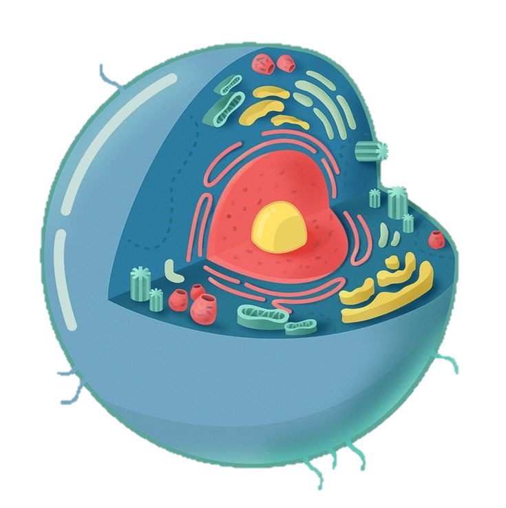
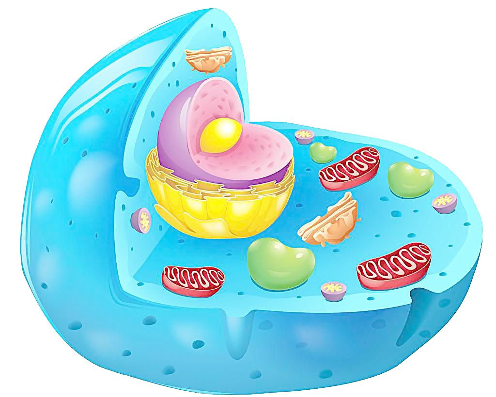

-
Sobre
As células eucarióticas são células encontradas nos seres vivos do Domínio Eukarya, como protozoários, animais e plantas. Essas células destacam-se pela presença de um núcleo verdadeiro, ou seja, a região onde o material genético encontra-se é delimitado por membrana, a membrana nuclear ou carioteca, por essa razão o termo eucariótico vem do grego eu, que significa verdadeiro, e karyon, que significa núcleo
Nas células eucarióticas observa-se uma grande variedade de organelas membranosas, sendo possível verificar a presença de estruturas, como complexo golgiense, mitocôndrias, cloroplastos (célula vegetal) e outras estruturas ausentes em células procarióticas. Os ribossomos, assim como nas células bacterianas, aparecem nas células eucarióticas, entretanto, esses são maiores e apresentam diferenças em sua composição.
- 

CÉLULA ANIMAL
A célula animal é uma célula eucarionte encontrada nos organismos do reino Animalia. Como todas as células eucariontes, ela possui um núcleo definido e organelas celulares, como complexo golgiense, mitocôndrias e lisossomos. Podemos diferenciar a célula animal da vegetal observando a presença de parede celular, plastídios e vacúolo central apenas em células vegetais.
Organelas presentes na Célula Animal:
-

Centríolos
Os centríolos são estruturas celulares que auxiliam na divisão celular (mitose e meiose). Possuem, portanto, a capacidade de duplicação durante o ciclo da divisão celular, organizando o fuso acromático. Após o processo de duplicação, os centríolos migram em direção aos polos da célula. Relacionados com o processo de divisão celular
-

Complexo golgiense
O complexo de golgiense, também denominado de complexo de Golgi ou aparelho de Golgi, é uma organela celular que está relacionada com o processo de secreção de substâncias. Trata-se de uma estrutura formada por várias vesículas achatadas, as quais estão dispostas formando uma espécie de pilha de vesículas.
-

Lisossomos
Lipossomas são vesículas constituídas de uma ou mais bicamadas fosfolipídicas orientadas concentricamente em torno de um compartimento aquoso e servem como carreadores de fármacos, biomoléculas ou agentes de diagnóstico. A estabilidade dos lipossomas pode ser afetada por fatores químicos, físicos e biológicos.
-

Mitocôndrias
Onde ocorre a respiração celular, processo responsável por gerar energia para a célula. Devido a sua função, as mitocôndrias são frequentemente denominadas “casas de força” das células.
-
Peroxissomo:
Organela citoplasmática responsável por produzir enzimas digestivas. Os peroxissomos ou peroxissomas são organelas citoplasmáticas presentes nas células de animais e plantas. Elas possuem enzimas digestivas que são responsáveis por degradar gorduras e aminoácidos no interior das células sem prejudicar os tecidos.
-

Retículo endoplasmático:
Pode ser classificado em liso (agranular) ou rugoso (granular). Este último caracteriza-se pela presença de ribossomos aderidos à sua membrana. O retículo endoplasmático liso está relacionado com a síntese de lipídios e desintoxicação, enquanto o rugoso está relacionado com a síntese de proteínas.
CÉLULA VEGETAL
A célula vegetal, assim como a animal, é eucariótica, ou seja, possui núcleo delimitado por membrana nuclear (carioteca). Além dessa característica, essas células possuem membrana plasmática e citoplasma, estruturas comuns a qualquer célula.
Algumas organelas e estruturas são compartilhadas com outros tipos celulares, como as mitocôndrias, complexo golgiense, retículo endoplasmático, ribossomos e peroxissomos. Outras estruturas, no entanto, são restritas à célula vegetal, isto é, são encontradas apenas nesse tipo de célula. Essas estruturas são: parede celular, plastídios e vacúolo de suco celular.

Parede Celular
A parede celular é uma estrutura relativamente rígida que está localizada externamente à membrana plasmática, restringe o tamanho da célula e impede sua ruptura no momento em que ocorre a entrada de água. Além disso, ela também atua na defesa contra organismos patogênicos, na junção de células adjacentes, fornece resistência ao vegetal, entre outras funções.
Organelas presentes na Célula Vegetal:
-

Plastídios
Os plastídios apresentam genoma próprio e capacidade de se autoduplicar, o que sugere que essas estruturas surgiram por endossimbiose. Eles são classificados em três tipos básicos: cloroplastos, cromoplastos e leucoplastos.
-

Váculo de suco celular
O vacúolo de suco celular é uma estrutura típica da célula vegetal que atua em diversas atividades da célula, garantindo, por exemplo, o acúmulo de substâncias, a manutenção do pH, a digestão de componentes celulares, a degradação de macromoléculas, a manutenção da rigidez dos tecidos, o controle osmótico, entre outras funções. Essa estrutura é delimitada por uma membrana denominada de tonoplasto e apresenta em seu interior suco celular.
-

Glioxissoma
"Além das estruturas citadas, em algumas células vegetais, principalmente em sementes oleaginosas, é possível observar a presença de glioxissomos. Essa estrutura, classificada como microcorpo, participa do processo de conversão de lipídios em açúcares.